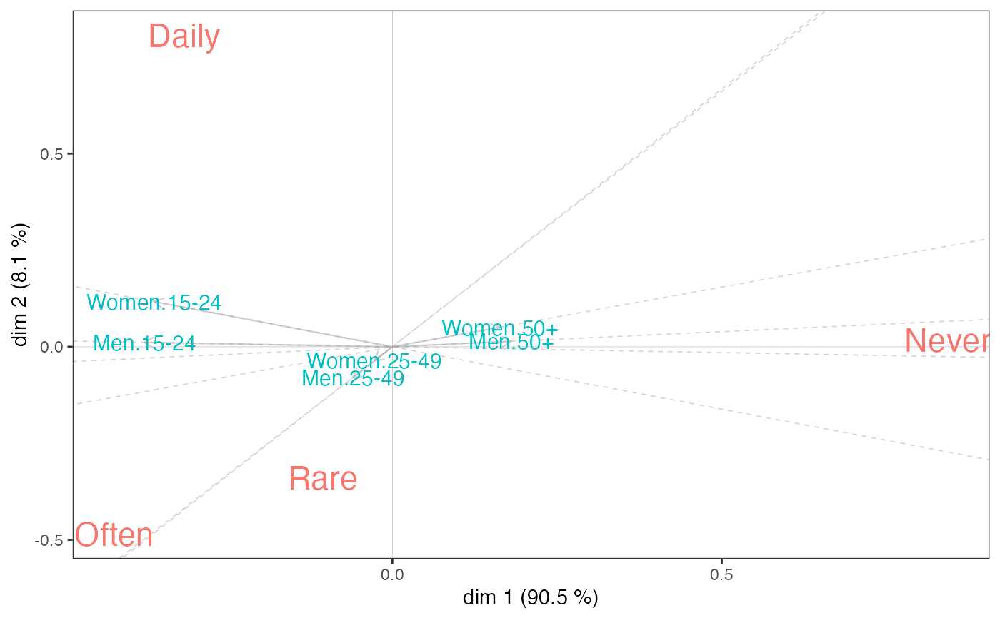

nsCA.RdNonsymmetric correspondence analysis, for analysing contingency tables with a dependence structure
nsCA(X, ncp = 5, row.sup = NULL,
col.sup = NULL, quanti.sup = NULL, quali.sup = NULL,
graph = FALSE, axes = c(1,2), row.w = NULL)a data frame or a table with n rows and p columns, i.e. a contingency table. Predictor variable should be in rows and response variable in columns.
number of dimensions kept in the results (by default 5)
a vector indicating the indexes of the supplementary rows
a vector indicating the indexes of the supplementary columns
a vector indicating the indexes of the supplementary continuous variables
a vector indicating the indexes of the categorical supplementary variables
boolean, if TRUE a graph is displayed
a length 2 vector specifying the components to plot
an optional row weights (by default, a vector of 1 and each row has a weight equals to its margin); the weights are given only for the active rows
When dealing with a contingency table with a dependence structure, i.e. when the role of the two variables is not symmetrical but, on the contrary, one can be considered as predicting the other, nonsymmetric correspondence analysis (NSCA) can be used to represent the predictive structure in the table and to assess the predictive power of the predictor variable.
Technically, NSCA is very similar to the standard CA, the main difference being that the columns of the contingency table are not weighted by their rarity (i.e. the inverse of the marginal frequencies).
An object of class CA from FactoMineR package, with an additional item :
Goodman and Kruskal tau
Kroonenberg P.M. and Lombardo R., 1999, "Nonsymmetric Correspondence Analysis: A Tool for Analysing Contingency Tables with a Dependence Structure", Multivariate Behavioral Research, 34 (3), 367-396.
The code is adapted from the CA function in FactoMineR package.
data(Music)
# The combination of Gender and Age is the predictor variable
# "Focused" listening to music is the response variable
tab <- with(Music, table(interaction(Gender, Age), OnlyMus))
nsca <- nsCA(tab)
nsca.biplot(nsca)

# Goodman and Kruskal tau
nsca$GK.tau
#> [1] 0.05991598